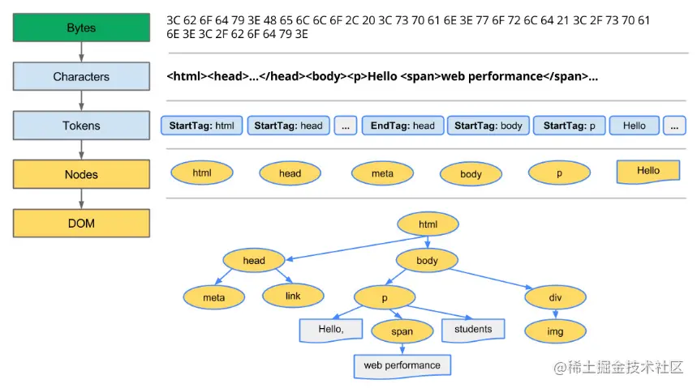
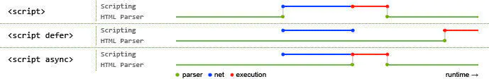
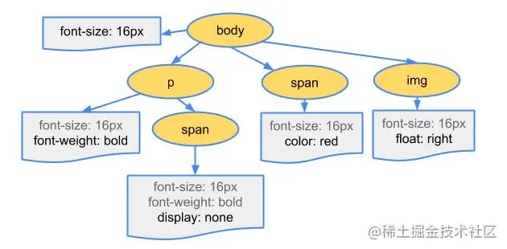
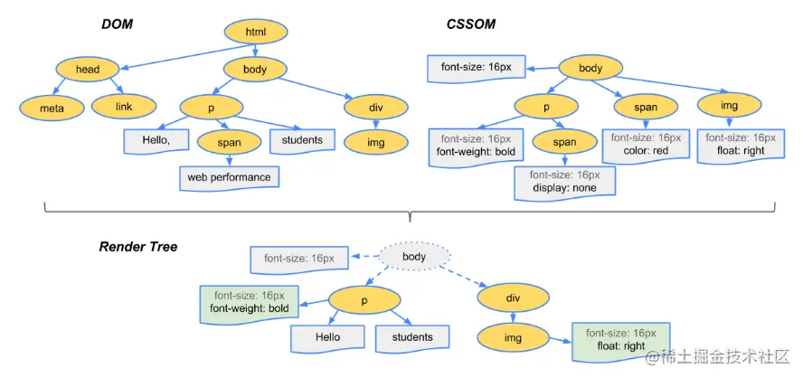

浏览器加载、渲染
本文参考了：浏览器渲染过程与性能优化
根据链接发送 http 请求 HTML 并解析，大致步骤如下：
-
处理
HTML标记数据并生成DOM树 -
处理
CSS标记数据并生成CSSOM树 -
将
DOM树与CSSOM树合并在一起生成渲染树 -
遍历渲染树开始布局，计算每个节点的位置信息
-
将每个节点绘制到屏幕
生成 DOM 树
-
编码：将
HTML字节数据根据响应头数据转换为其指定编码的字符 -
令牌化：浏览器会根据
HTML规范来将字符串转换成各种令牌（如<html>,<body>这样的标签以及标签中的字符串和属性等都会被转化为令牌，每个令牌具有特殊含义和一组规则）令牌记录了标签的开始与结束，通过这个特性可以轻松判断一个标签是否为子标签（假设有
<html>与<body>两个标签，当<html>标签的令牌还未遇到它的结束令牌</html>就遇见了<body>标签令牌，那么<body>就是<html>的子标签） -
生成对象：接下来每个令牌都会被转换成定义其属性和规则的对象（就是节点对象）
-
构建完毕：
DOM树构建完成，整个对象集合就像是一棵树形结构可能有人会疑惑为什么
DOM是一个树形结构，这是因为标签之间含有复杂的父子关系，树形结构正好可以诠释这个关系（CSSOM同理，层叠样式也含有父子关系。例如：div p {font-size: 18px}，会先寻找所有 p 标签并判断它的父标签是否为 div 之后才会决定要不要采用这个样式进行渲染）
简单来说 DOM 树构建过程：字节 > 字符 > 令牌 > 节点对象 > 对象模型(OM)

script 标签
遇到最基本的 script 标签时，会阻塞浏览器并请求 js 文件（内联无需请求），请求后会立即执行 js，执行完毕后浏览器才继续解析
阻塞浏览器其实很不好，用户会觉得卡，我们可以给 script 加上特别的属性来实现异步请求和渲染结束后执行
-
async
1
<script type="text/javascript" src="index.js" async></script>
这样申明的
script在请求时是异步的，不会阻塞浏览器请求完毕后会立刻执行，如果此时浏览器还未渲染完成，会阻塞；并且对未解析生成的节点操作无效
-
defer
1
<script type="text/javascript" src="index.js" defer></script>
也会异步加载；特点是加载后不会立即执行脚本，等待文档所有元素解析完后，脚本会在
DOMContentLoaded事件触发之前执行

生成 CSSOM 树
解析 HTML 遇到 <link> 标签时，浏览器会去根据标签属性请求对应资源，当请求到的是 CSS 文件时，会开始 CSS 解析，阻塞浏览器渲染
对于内联的样式，无需发送请求
CSSOM 生成过程与 DOM 没有什么差别
假设请求到的文件内容如下：
1 | body { |
解析出来的 CSSOM 树大致如下：

生成渲染树
渲染树就是 DOM 树与 CSSOM 树结合后的产物

-
浏览器会先从
DOM树的根节点开始遍历每个可见节点-
不可见的节点包括
display: none属性的节点 -
visibility: hidden不算是不可见，它的语义是隐藏元素，但元素仍然占据着布局空间，所以它会被渲染成一个空框
-
-
对每个可见节点，找到其适配的
CSS样式规则并应用 -
渲染树构建完成，每个节点都是可见节点并且都含有其内容和对应规则的样式
布局阶段
该步骤主要工作是计算每个节点在窗口内的确切位置与大小
从渲染树的根节点开始遍历，然后确定每个节点对象在页面上的确切大小与位置
其输出是一个盒子模型，它会精确地捕获每个元素在屏幕内的确切位置与大小，所有相对的测量值也都会被转换为屏幕内的绝对像素值
渲染
布局(Layout) 完成后，浏览器会发出 Paint Setup,Paint 事件，开始将渲染树绘制成像素，绘制耗时跟 CSS 样式复杂度成正比